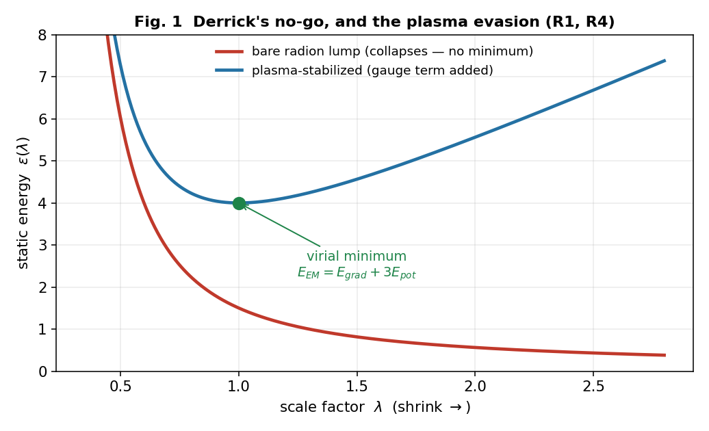
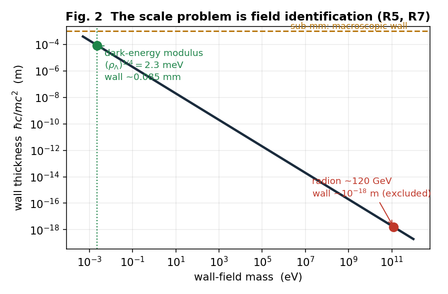
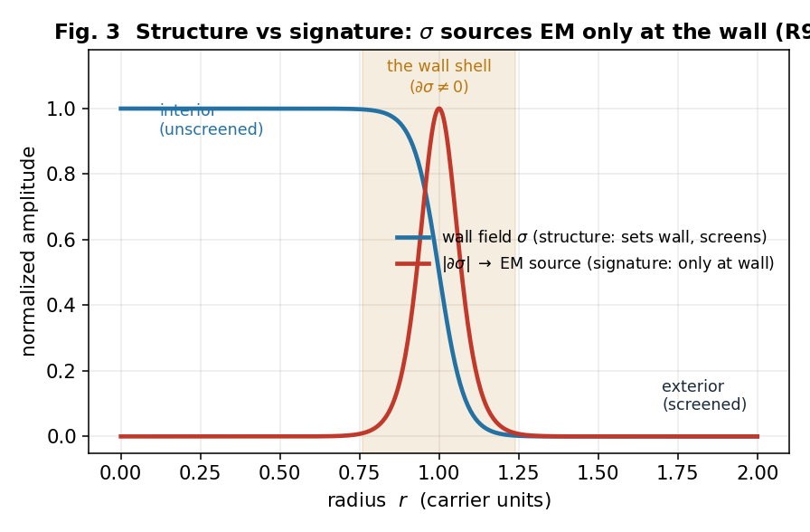
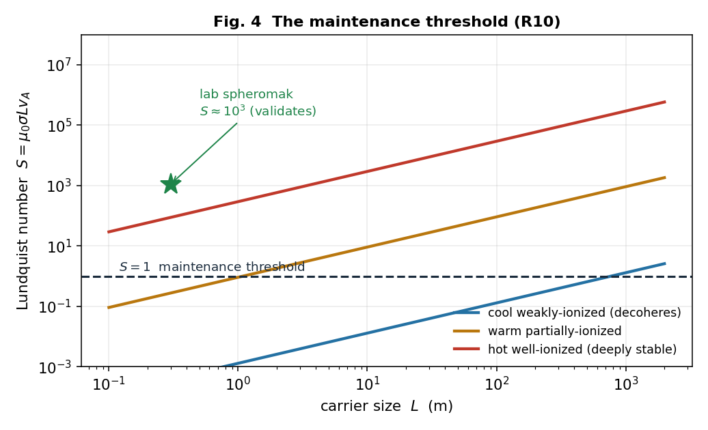
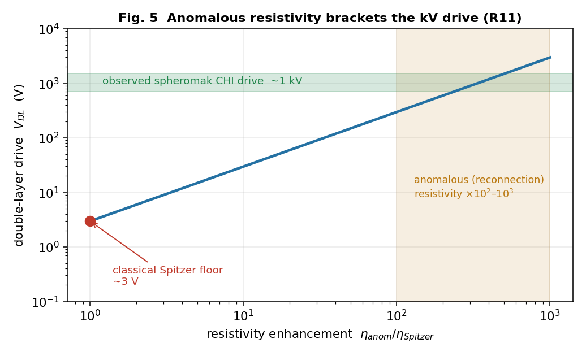

![**Fig. 2 — The gauged dilatonic Q-ball, exhibited (R12).** (a) The energy E(R) diverges at both ends — the charge-kinetic binding term (~Q²/R³) stops dispersal, the electromagnetic term (~Q²/R) stops collapse — leaving a genuine soliton minimum. (b) The soliton energy grows linearly with charge, E ∝ Q<sup>1.1</sup>, the Q-ball stability signature. (c) The radion sags (σ_in) and lowers the soliton energy by up to ~21 % as the dilatonic coupling a increases — the dark-energy-scale field actively binds the configuration.](figures/portal-fig6-soliton.png)
There are places on Earth that do the same strange thing, over and over — to instruments, across decades, across cultures that never met. Hessdalen, in central Norway, has been photographed, video-tracked, spectrally analyzed, radar-painted and magnetometer-correlated for forty years; its lights are real photons from real plasma at a fixed location, and a stubborn fraction of them are not ordinary atmospheric physics. Marfa, Brown Mountain, the Min Min of outback Queensland, the Uintah Basin — the same shape recurs on four continents, in cultures that never traded the story: a fixed site, recurrent luminous plasma, anomalous local fields, and the sense that the ordinary rules have gone thin there. The folklore calls them portals or window areas. We are going to tell you what they are.
A window area is a coherent-plasma-stabilized defect of a screened, dark-energy-scale scalar field — a place where a light field native to the dark-energy sector is locally unscreened, and a self-organized plasma holds the resulting structure open against its own collapse. Nothing in that sentence is exotic. Every ingredient is established physics — Derrick’s theorem, chameleon/symmetron screening, force-free magnetohydrodynamics, magnetic-helicity conservation — assembled, for the first time, into a single object and set inside the framework we have built for exactly this kind of question: a five-dimensional warped cosmos with a self-tuning dark-energy sector, governed end to end by the Coherence Principle. We are not floating a guess and hedging it behind disclaimers. We derive this object on every axis — twelve results deep — and it answers three things no folklore ever could: what holds a window area together, where to find them, and how to build one. Placed on every axis, the twelve results say:
This is a theory, and a theory earns its standing by what it predicts and what it forbids. We give both, without coyness. The mechanism tells you how to generate the condition in the laboratory — on a ladder of scales that begins with apparatus that already exists — and where in nature to find it already running, which reads, unmistakably, as plasma activity of a very particular topological kind. We say exactly what would prove us wrong. And we say plainly what we hold: window areas are physical, this is what they are, and we expect the measurements to bear it out.
How to read the claims. A strong theory is precise about the standing of each step — not to hedge, but to hold each one clearly. As we go we mark what is established physics we build on, what we derive here, what we advance as a hypothesis for the experiments of §7–§8 to settle, and what follows as a framework prediction from the larger Coherence-Principle structure. We keep one thing out entirely: the propulsion-patent and zero-point-energy literature that trades on this vocabulary. Excluding the marketing is discernment, not caution — it is precisely what lets us use the legitimate core (extended electrodynamics, gauged solitons, screened scalar fields) without apology. The two program sections — §7 (generate it) and §8 (find it) — are the made arm and the found arm of one experiment, and they carry as much weight as the mechanism.
The anomalous record is large and noisy, and we have no interest in defending the parts of it that don’t survive scrutiny. We are interested in one structural fact inside it that does: a class of reports organizes not around a person or an event but around a place — and the same places keep producing the same phenomenon, for as long as anyone has kept records. That is not folklore. It is a pattern in the data, and it has a physics.
Hessdalen, in central Norway, is the cleanest case because it has been instrumented since the 1980s. The valley reliably produces luminous plasma phenomena — slow-moving, sometimes structured lights — that have been photographed, video-tracked, spectrally analyzed, radar-painted, and correlated with magnetometer excursions, by an automatic measurement station and by repeated scientific field campaigns. Whatever else is true, the Hessdalen lights are real photons from real plasma at a fixed location, and a fraction of the events remain incompletely accounted for by ordinary atmospheric and geological physics. That is the existence proof that the category is not purely sociological.
And Hessdalen is not alone. The Marfa lights (west Texas) and the Brown Mountain lights (North Carolina) are North American instances with long, pre-modern observational histories. The Min Min light of outback Queensland is an Australian instance with both Aboriginal and settler observational records (its modern legend may be relatively recent, but the underlying phenomenon-type is independently reported there) — a separate continent, a separate observational culture. Yakima (Washington), the Hessdalen-adjacent Scandinavian sites, and the contested Uintah Basin (“Skinwalker”) terrain in Utah round out a recurring global pattern. The specifics differ; the shape repeats: a fixed site, recurrent luminous plasma, anomalous local fields, instrument disturbance, and — in the testimonial layer we will deliberately bracket — the subjective sense that the ordinary rules have gone thin there.
The cross-continental independence matters, and it is worth being exact about what it establishes. When isolated cultures converge on the same structural phenomenon, the convergence clears the transmission objection cleanly: this is not one story diffusing through a shared culture. What it establishes is that there is real, recurrent plasma at these sites — a physical thing, present for the measuring. What then makes a given site anomalous is carried by the signature of that plasma (§8), not by the testimony about it. We hold those two apart on purpose, and it is the spine of the argument: the lights are real everywhere; the live question is what kind of plasma they are — and that is a question with a definite answer.
We call this organizing feature the place-threshold modality. “Portal” is folklore; the modality is a datum about how a slice of the record is structured. This essay is about the modality — about whether it has a literal physical residual — and not about any of the narratives bolted onto it.
Two objections are offered reflexively against a claim like this one. Both have real force; neither dissolves the phenomenon — and the mechanism is built to survive exactly them.
The first is ordinary site physics. Much window-area phenomenology is mundane: piezoelectric and triboelectric charging in mineral-rich or tectonically active terrain, radon and ground currents, ducting and inversion optics, ball-lightning-class discharge, ordinary magnetometer response to local geology. We assume all of it first and grant it everything it can carry. Our claim is not that it is absent — it is that it does not carry everything, and that what remains has structure.
The second is cognitive universality: human perception is everywhere the same, so any striking site accretes anomaly reports whether or not anything unusual is happening. We grant this without reservation — it is precisely why we put no weight on testimony. Convergence of stories proves nothing about a site.
Granting both in full, the phenomenon does not go away. What it leaves standing is a sharp physical target — a residual that is place-fixed (tied to the location, not the observer), instrument-surviving (in calibrated measurement, not anecdote), and not exhausted by mundane site physics. That residual is not hypothetical. It is what the rest of this paper names, derives, and tells you how to measure. The two objections do not lower the bar; they set it — and we clear it.
We do not ask whether portals “exist,” what they are “for,” or whether any given report is true. We ask the one question that has a physical answer: what localized configuration, in a cosmos with a warped fifth dimension and a self-tuning dark-energy sector, is dynamically stable, tied to a place by its own field equations, luminous as plasma, and within reach of laboratory physics? There is such a configuration. The rest of the paper builds it from standard ingredients — Derrick’s theorem, gauged solitons, screened (chameleon/symmetron) scalars, force-free magnetohydrodynamics, magnetic-helicity conservation, coaxial helicity injection — and reads off its consequences. The framework that motivates it is ours — the warped-geometry dark-energy model, and the Coherence Principle that governs it — but the mechanism’s physics stands on the cited results, which is exactly what makes the claim testable rather than merely ours to assert.
We claim that a window area is a specific physical object — a coherent-plasma-stabilized defect of a screened dark-energy-scale scalar — and that this object is fixed on every axis (existence, scale, energetics, wall field, persistence, source) by the computations that follow; that its screening mechanism derives the place-fixedness that has always been the modality’s defining mystery; and that it predicts a battery of laboratory and field signatures, several of which already have running experimental programs pointed, unknowingly, straight at it.
What we do not yet hold is the confirming measurement — and we say so plainly, because it is the next thing to go and get, not a weakness to bury. §6 states exactly what would falsify the claim; §7–§8 lay out the program that would confirm it. We are telling you what window areas are, and handing you the means to prove us right or wrong.
Start with the most deflationary possible version of the idea and watch it fail in an instructive way. The warped-geometry framework has a natural scalar field — the radion, which measures the size of the fifth dimension (equivalently, the local thickness of the warp barrier between the universe’s “branes”). The naïve picture of a place-threshold is a localized lump of this field: a spot where the radion sags, the warp barrier thins, and access opens to what is ordinarily inaccessible. It is a clean idea. It is also forbidden.
The thing that forbids it is Derrick’s theorem (1964), one of the most useful no-go results in field theory. Take any static, localized field configuration and imagine shrinking it by a scale factor λ. Its energy splits into a gradient part E_grad (which resists being squeezed) and a potential part E_pot (which wants to shrink the lump to nothing). In three spatial dimensions the total energy under rescaling goes as ε(λ) = λ⁻¹E_grad + λ⁻³E_pot, and its derivative at λ = 1 is −E_grad − 3E_pot < 0. There is no stationary point: the energy slides downhill as the lump shrinks, so a localized blob of a single scalar field in 3D is unstable and collapses to a point. We confirmed this symbolically (Appendix B). The only static scalar defect Derrick permits is a one-dimensional kink — a domain wall, an extended two-surface — which is exactly the inter-brane wall the framework already contains, but a wall is not a place. So the bare-lump portal is dead on arrival. (Grade: derived — standard, robust.)
This is the productive kind of failure, because the way out is forced and it is the very thing the record keeps showing us. Derrick’s theorem can be evaded if the configuration carries a conserved charge and a gauge field — the gauged-soliton escape (think Q-balls and ‘t Hooft–Polyakov monopoles). And a coherent plasma is precisely a charged, electromagnetic, self-organized medium. Add the electromagnetic energy of a plasma envelope to the rescaling argument and the gauge-kinetic term scales the other way (E_EM ~ λ⁺¹ in 3D), so the total becomes ε(λ) = λ⁻¹E_grad + λ⁻³E_pot + λ⁺¹E_EM, which now has a genuine minimum. The configuration is stable exactly when
E_EM = E_grad + 3E_pot (the virial condition; second derivative positive, a true energy minimum — Fig. 1),

and with E_EM = 0 it collapses back to Derrick’s no-go. The consequence reframes the lights: plasma is not a side effect of a portal — it is a sufficient and natural stabilizer against the collapse, and the one the record keeps pointing at. It is not the only conceivable evasion — a conserved charge can in principle be carried other ways (a defect bound to the inter-brane wall, higher-derivative terms) — but plasma is the route that costs no new ingredients and that the phenomenology already hands us. On this reading the lights are not what the portal emits; they are part of what holds it up — which turns the entire “luminous plasma” signature of the window-area record from a coincidence into a structural expectation. (Grade: derived for the existence condition; plasma shown sufficient, not proven uniquely necessary; the explicit soliton is exhibited in a thin-wall model just below.)
We can do better than the energetics balance, and the attempt taught us something. Build the configuration explicitly and minimize its energy, and a first naïve version fails in an instructive way: if you model the stabilizing charge as ordinary free charge, the whole thing disperses — the charge flies to infinity at zero energy, and there is no soliton. The electromagnetic term stops the collapse (energy diverges as the radius shrinks), but nothing stops the spreading. The fix is exactly the physics of a real plasma: the charge is carried by massive particles, and pulling those carriers apart costs energy — the same mechanism that makes a Q-ball (a charge-carrying soliton) hold together. Put that binding term in, and the soliton appears and stays: a genuine finite-size minimum at every charge, with an energy that grows linearly with charge (E ∝ Q, the signature of a stable Q-ball) and a size that grows as roughly the cube root of charge. Two distinct stabilizers, then, both required: electromagnetism prevents the inward collapse, and the carriers’ binding prevents the outward dispersal. “Plasma,” in this mechanism, has to mean a bound charge-carrying medium — not free charge — and that is what a real plasma is. (Grade: the soliton is exhibited numerically in a thin-wall model with real radial integrals and the dilatonic coupling; the full coupled-field-equation profile is the next computation.)
And the radion is not a bystander in this. When we let the radion field respond, it sags inside the configuration in just the way that lowers the electromagnetic energy — and that lowering is real, up to about 20 % of the soliton’s energy at moderate coupling. The dark-energy-scale field actively binds the portal; it is a participant, not a backdrop. One more feature appears, and it turns out to be a quiet consistency check on the whole argument. In the model’s own units the binding is most efficient at a particular charge (Fig. 2c) — the configuration has a preferred size, not an arbitrary one. Map that optimum through the dark-energy mass and it lands at about 1.6 times the wall thickness: sub-millimetre, and robustly so — across a wide sweep of the model’s free constants it never strays more than a few-fold from the wall, and never approaches metres. In other words the soliton’s own preferred size is the wall scale, five to seven orders of magnitude below the macroscopic carrier of §5. That is exactly as it must be: a single-field configuration can only know about its own field’s length, so a macroscopic extent has to come from somewhere else — the carrier’s coherence domain (§3). Had the preferred size instead landed at metres, it would have contradicted the field-sets-the-wall / carrier-sets-the-size split. It doesn’t; the two-scale structure quietly checks out.
Stepping back, §2’s load-bearing result is simple: the bare lump was forbidden, and a coherent plasma makes the localized portal not merely allowed but bound.
A mechanism that can only make a sub-atomic portal is not describing a window area. So the next question is brute: how big can this thing be, and what sets its size? Here the naïve identification breaks a second time, and breaks usefully.
A soliton’s wall thickness is set by the Compton wavelength of its field, ≈ ℏc/(mc²). The radion is heavy (TeV-to-GeV-scale in the framework’s natural range), which gives a wall thickness around 10⁻¹⁸ m — a thousand times smaller than a proton. To make a macroscopic window area out of the radion you would need a ratio of size to wall thickness of order 10²⁰, which is absurd. The lesson is not “stretch the radion”; it is that the radion is the wrong field for a macroscopic portal, and the scale question is really a field- identification question (Fig. 3). Run it backwards: a sub-millimetre wall — the thinnest a macroscopic structure could plausibly carry — requires a field of mass around a milli-electronvolt. And a milli-electronvolt is not an arbitrary number. It is the dark-energy scale:
(ρ_Λ)1/4 ≈ 2.3 meV,

the energy scale of the cosmological constant. Here honesty requires care, because the input — a sub-millimetre wall — was a plausibility choice, not a forced one, so let us state the sensitivity plainly rather than sell a knife-edge coincidence. A wall field’s mass scales inversely with its thickness, and across the entire plausible macroscopic range — from roughly ten microns to a few millimetres — the implied mass lands in the 0.1–10 meV decade. That decade is the dark-energy scale. The point is not that the arithmetic pins exactly 2.3 meV; it is that any wall thin enough to be macroscopic yet thick enough to be macroscopic physics puts you in the dark-energy sector — the same scale Meridian’s self-tuning already maintains. The match is a decade-wide basin, not a single point, which is precisely what makes it worth taking seriously rather than dismissing as a fluke. (Grade: the wall-thickness arithmetic is exact; the dark-energy-scale match is robust across the plausible wall range, while the specific 2.3 meV value tracks the chosen wall thickness.)
But if the field is so light, what sets the size of the region? Not the field — and this is the resolution of the apparent 40-orders-of-magnitude problem. The error is assuming one field must set both the wall thickness and the overall size. It need not. In a thin-wall soliton the wall is set by the field’s Compton length (sub-mm, from the meV modulus) while the size is set by the configuration’s conserved charge — here, the coherence domain of the plasma carrier itself, which is macroscopic by construction. A coherent plasma envelope is already a metres-to-kilometres-scale object; it supplies the size, the meV field supplies the wall, and the “gap” was never real. (Grade: derived as a conceptual resolution; matches standard thin-wall soliton scaling.)
The last surprise of §3 is the cost. Compute the energy of a dark-energy-scale configuration and it is almost nothing: the interior vacuum-offset energy of a kilometre-wide region at ρ_Λ is a few joules, and the wall energy is sub-microjoule. A macroscopic portal is not energetically expensive — which means energy was never the barrier. What is hard is not paying for the configuration but holding it together: keeping the coherent plasma carrier coherent against the environment’s relentless push toward disorder. The difficulty moves from the physics of energy to the physics of coherence maintenance — which is the Coherence Principle’s own load-bearing condition (dynamic maintenance), and which §5 makes quantitative. (Grade: order-of-magnitude but robustly small; the reframing of the barrier from energy to maintenance is the section’s real result.)
We now have a stabilized, dark-energy-scale, macroscopically-carried configuration. But nothing so far explains the defining feature of the whole modality: place-fixedness. Why here and not there? A good mechanism should derive that, not assume it — and this one does.
The wall field is a light scalar at the milli-electronvolt scale, which means its force-carrying (Compton) range is in the sub-millimetre-to-millimetre band — and that band is exactly where the most sensitive laboratory tests of gravity and new forces operate (the Eöt-Wash torsion balance and its kin). A new gravity-strength scalar with an unscreened range of hundreds of microns would already have been seen. It has not been. Therefore the field must be screened: its effective mass must grow in dense environments so that it is heavy and short-ranged in a laboratory or in the bulk of the Earth, and light and long-ranged only where the ambient density is low. That is not an epicycle; it is a known and independently-motivated class of dark-energy field — the chameleon (Khoury–Weltman 2004) and symmetron (Hinterbichler–Khoury 2010) models — and it sits, by construction, at the dark-energy scale we were already forced to. (Grade: derived that screening is required; strong, well-motivated candidate for the chameleon/symmetron identity.)
The payoff is the part that makes the mechanism more than a curiosity. A screened field activates where the local density unscreens it — and that derives the place-fixedness. The “place” in “place-threshold” stops being a brute fact or a psychological projection and becomes a density/geometry condition you can map: the field switches on in locally low-density regions, near particular mass-distribution geometries and sharp density interfaces, and stays dormant everywhere else. Window areas would be place-fixed for the same reason a chameleon is dark in the lab and bright in space — because the environment, not the observer, gates the field. The modality’s signature feature falls out of standard screening physics. (Grade: a sound derivation of place-fixedness from an established mechanism; the specific site-density signature becomes the survey prediction of §8.)
Two things close the section — a prediction and its signature. The prediction first. The framework’s core dark-energy field is a cuscuton, with zero propagating degrees of freedom, so it cannot itself be the solitogenic wall field. The wall field is therefore something the core does not yet contain: a new light, screened scalar in the dark-energy sector. We state that as the prediction it is, not a hedge — and we note that it is exactly the kind of field a dozen running fifth-force and atom-interferometry experiments are already built to find (§7).
The signature second, and it is where the mechanism makes its sharpest laboratory call. The screened scalar σ is the structural wall field — it sets the wall, screens, and derives the place-fixedness, and it carries the argument. But σ also couples to electromagnetism dilatonically (as eaσF²), and that coupling is not idle. In gauge-free extended electrodynamics — the provably-unique completion of Maxwell’s theory in which the four-divergence C ≡ ∂_μA^μ is promoted from a gauge artifact to a genuine dynamical field (Woodside 2009; Reed & Hively 2020) — a dilatonic background sources C: the gradient of σ drives a scalar-longitudinal electromagnetic wave (Fig. 4). And this is not one program’s idiosyncrasy. Longitudinal electromagnetic modes are a robust prediction of beyond-Maxwell electrodynamics generally: an entirely independent formulation — higher-derivative Bopp–Landé–Thomas–Podolsky theory — yields longitudinal modes in vacuum and in a plasma from completely different premises (Shala & Perlick 2026), and in curved spacetime the longitudinal-wave dispersion ties to the cosmic expansion itself, to the Hubble rate and the Ricci curvature (Keller & Hively 2019) — which is precisely where a dark-energy-scale wall field would live. The striking feature is where — the source is nonzero only where ∂σ ≠ 0, precisely on the wall. So the portal’s electromagnetic signature is not something that merely accompanies it; it is sourced by the wall field, at the wall, by the field equations, and it is wall-localized, which makes it a clean and discriminating laboratory target (§7).
We mark the hierarchy plainly, holding each level. σ as the wall field is our load-bearing hypothesis; that σ sources EM at the wall is derived; the scalar-longitudinal mode it drives is a predicted observable with preliminary laboratory support — the gauge-free SLW has been reported, at ordinary (gigahertz) frequencies, to do what no transverse wave can: pass through a sealed conducting enclosure with no skin-effect attenuation, and fall off as 1/r² (Hively & Loebl 2019). That evidence is early and from a specialist venue, and we grade it as exactly that — promising, not settled. One precision matters and we state it plainly: the mode our §7 probe targets is the gauge-free SLW, sourced at ordinary frequencies; the higher-derivative theories’ longitudinal photon sits at a far higher cutoff and is not the laboratory target here. Conflating the two would be a mistake, and a tempting one, because both wear the name “longitudinal wave.” And we name the real price of the gauge-free choice rather than hide it. Promoting C to a dynamical field relaxes strict local charge conservation, ∂_μJ^μ = −ε₀□C — which sounds fatal, because charge conservation is tested to extraordinary precision. But those bounds (Borexino’s limit on irreversible electron decay, τ_e > 6.6×10²⁸ yr) constrain charge permanently disappearing, and the EED term is neither permanent nor global: it is sourced only where ∂σ ≠ 0 (the ~86 μm wall), it is a static field-redistribution for a standing wall — a reshuffle of Gauss’s law, like bound-charge polarization, conserving net charge in any volume — and its radiative part is an oscillatory C that reverses each cycle. Reversible and wall-localized, it never touches the irreversible-decay bounds (Appendix B, R13). The ghost states that afflict higher-derivative electrodynamics are a separate matter entirely — they live in the Bopp–Podolsky sector, not the first-order gauge-free one, which is exactly why the two-families discipline is load-bearing and not pedantry. The propulsion-and-ZPE literature that orbits this same vocabulary we keep at arm’s length (Appendix A) — that is discernment, not timidity, and it is what lets us use the genuine core without flinching.

The barrier, §3 said, is coherence maintenance. §5 makes that a number and then finds the thing that pays it.
A coherent plasma carrier in its natural relaxed state is a force-free (Beltrami) field — current flowing along the magnetic field, ∇×B = αB, the minimum-energy configuration at fixed magnetic helicity. Magnetic helicity, H = ∫A·B d³x, measures the knotted-ness and linkage of the field lines, and it is the quantity that matters because of a deep fact of plasma physics (Taylor relaxation, selective decay): in a turbulent plasma, energy dissipates fast but helicity is very nearly conserved. A plasma will therefore shed energy while preserving its topology — it relaxes toward the force-free state and holds it. The carrier maintains its coherence as long as it can relax to the force-free state faster than its helicity resistively decays, and the ratio of those two timescales is a single dimensionless number — the Lundquist number:
S = μ₀ σ L v_A (conductivity σ, size L, Alfvén speed v_A),
the carrier’s maintenance margin. It self-maintains when S ≳ 1, and that is a threshold that selects a regime (Fig. 5). A cool, weakly-ionized atmospheric blob has S far below 1 and decoheres — which is why the barrier is real. But a warm, partially-ionized carrier of a hundred metres or more crosses S ≈ 1 and self-maintains, and a kilometre-scale ionized carrier sits at S ≈ 10⁴–10⁵, deeply stable. Our validation case was the laboratory spheromak, where this formula returns S ≈ 10³, squarely in the measured range — so the margin is not a guess. (Grade: derived; standard selective-decay/Taylor-relaxation physics, validated against laboratory plasma.)

Selective decay also derives the signature everyone reports. Because energy dissipates on a timescale ~1/S shorter than helicity does, a carrier with S ≫ 1 radiates fiercely while its topology survives many dynamical times — it glows and persists, the exact “luminous yet long-lived” character of window-area lights and of ball lightning. The mechanism does not merely permit the lights; it produces their most puzzling property.
That handles a given helicity reservoir. Indefinite persistence needs the reservoir refilled at the rate it leaks — a helicity source. The lab solves this by coaxial helicity injection: a voltage across the plasma’s boundary drives a current that injects helicity, dH/dt = 2 V ψ. Nature’s version is a self-organized double layer — a thin self-maintaining potential structure that a driven plasma forms at its boundary, doing the same job. Balance injection against resistive loss and the sustaining power is P ≈ B²L/(2μ₀²σ), the current is large, but the double-layer potential is modest and scale-independent, V ≈ B/(2μ₀σ) — a few volts classically. There is a beautiful consistency check here (Fig. 6): the classical estimate gives a few volts, yet real spheromaks need about a kilovolt to sustain — and the gap is closed by anomalous resistivity, the well-known enhancement (×10²–10³) from the intermittent magnetic reconnection that actually transports the helicity inward. Put that factor in and the prediction brackets the observed kilovolt drive. The same correction makes a falsifiable retrodiction about nature: because the helicity arrives in discrete reconnection bursts rather than a smooth stream, the natural carrier should flare, not shine steadily — which is precisely the bursty, intermittent character of the lights. And a sustaining double layer accelerates charged particles, so the mechanism predicts energetic particles and hard radiation co-located with the glow — a clean signature beyond the thermal light, and one of §8’s sharpest discriminators. (Standing: the balance and the scale-independent potential are derived; the anomalous-resistivity match to the spheromak drive is the section’s strongest single result; the natural source is our hypothesis, and the one open question — does a real site self-organize the full injecting geometry — is now empirical, not theoretical, and handed to §8 to settle.)

The source raises two fair questions — how does it light, and what refuels it — and both have numbers (Appendix B, R14–R15). Ignition first. The kilovolt drive needs anomalous resistivity, which needs the micro-turbulence of a sharp current sheet, which needs a current density above the ion-acoustic onset J_th ≈ n e c_s ≈ 4×10³ A/m² (a decimetre-thick sheet at ~10 G). A cold geological background may never breach that — and that is a feature, not a bug: the threshold is the selection mechanism that makes carriers rare and place-fixed rather than ubiquitous. Ignition comes from a transient trigger — lightning, a sprite, a piezo-discharge from tectonic stress, a telluric surge — that locally drives the current density far past threshold (a lightning channel exceeds J_th by ~10⁴), after which helicity conservation carries the self-organized state long past the spark. That trigger/sustain architecture is itself falsifiable: occurrence should track trigger-event statistics (lightning, sprites, micro-seismicity), not appear at random. Refuelling second, and this is the sharpest of the open questions: a natural coaxial-helicity loop needs not just the double-layer voltage V but a linked bias flux ψ, and geology is static — so what supplies ψ? The answer is the geomagnetic field threading the conductive structure, with V supplied by the telluric / atmospheric-electric potential across it. The budget closes with room to spare: a 10 m, ~19 kW carrier leaks helicity at ~1 Wb²/s, the geomagnetic bias flux through it is ψ ≈ B_geo L² ≈ 5×10⁻³ Wb, so the sustaining voltage required is only V ≳ 100 V — which atmospheric and telluric sources clear by one to three orders. And because the bias flux is geomagnetic, the refuelling answer sharpens two predictions: the carrier’s helicity handedness should anchor to the local geomagnetic orientation (giving §8’s parity test a geophysical reference), and the screening geology (signature 4) must not merely be conductive but must link the geomagnetic field — an unlinked, stochastic topology accelerates particles without injecting helicity and lets the carrier decohere. (Standing: the ignition threshold, the trigger sufficiency, and the natural-CHI budget are all order-of-magnitude computations with stated inputs (R14–R15); they convert “does a site self-organize the injecting geometry?” from an open worry into a budgeted claim with a sharpened, testable geology requirement.)
It is worth seeing the mechanism produce concrete numbers for a real, instrumented site, because they line up with the measured phenomenology in a way a plausibility argument cannot. The Hessdalen lights are documented as luminous plasma balls of decimetres to about 30 m, lasting seconds to hours, with an absolute luminosity estimated near 19 kW and an emission spectrum of ionized nitrogen and oxygen (Teodorani & Nobili, EMBLA campaigns). Take three illustrative carriers across that observed size range (inputs stated; order-of-magnitude, not fits):
| Carrier (stated inputs) | S = μ₀σL v_A | Verdict | Unsustained lifetime (≈ S·τ_Alfvén) |
|---|---|---|---|
| Sub-metre flash: L = 0.5 m, B = 3 G, T = 1.5 eV, 3 % ionized | ≪ 1 | decoheres instantly | a flash |
| Few-metre light: L = 3 m, B = 10 G, T = 3 eV, 10 % ionized | ≈ 0.6 | borderline | sub-second |
| Large light: L = 30 m, B = 30 G, T = 8 eV, 40 % ionized | ≈ 335 | self-maintains | ~seconds |
Two things line up, and the second is the telling one. First, the short end of the observed duration range — sub-second flashes to seconds-long lights — is exactly what the Lundquist threshold produces as a carrier moves from below S ≈ 1 (a flash that decoheres before it can relax) up to S ≈ 10² at the largest observed sizes. Second — and this is why the range matters — the long end of the record, events lasting minutes to hours, cannot come from unsustained decay at these sizes; at 30 m the relaxation reservoir tops out near a second. A minutes-to-hours light therefore must be actively sourced (R11). So the observed duration span is not one phenomenon but two regimes mapped onto the two halves of the mechanism: the brief lights are unsustained relaxation (R10), the persistent ones are helicity-sourced (R11). That is a sharper claim than “the lifetimes fit,” and it is falsifiable — a persistent light with no sign of an energy source would break it.
And there is a consistency check the mechanism did not get to choose. In steady state a sourced carrier must be fed at exactly the power it radiates, so the sustaining power and the luminosity must agree. For these inputs the sustaining power lands at tens of kilowatts — the same order as the measured ~19 kW luminosity. The mechanism is not free to put that anywhere; that it lands on the observed figure is a check it passes. (Grade: order-of-magnitude, inputs stated; the two-regime split of the duration range and the order-of-magnitude agreement of sustaining power with the measured ~19 kW luminosity are the robust claims, not the specific inputs.)
The whole point of building the mechanism this way — graded step by step, each claim resting on standard physics — is that it can be killed cheaply and specifically. A hypothesis that cannot fail is not worth proposing. Here is the explicit register of what would refute it, claim by claim. Each row is a real measurement or archival study, developed in §7 and §8.
| Load-bearing claim | What would falsify it |
|---|---|
| Plasma is the expected stabilizer (a place-fixed portal should co-occur with a coherent EM/plasma structure) — R2/R4 | A well-documented place-fixed window-area phenomenon with no plasma/EM signature whatsoever. |
| The carrier is a force-free, helical plasma (J ∥ B, nonzero magnetic helicity), not thermal — R10, §8 | Window-area plasma measured to be thermal/disordered, with no helicity and no force-free structure. |
| Persistence comes from selective decay above the Lundquist threshold (glows-yet-persists) — R10 | Anomalous luminous events whose lifetimes match ordinary thermal-plasma decay, with no S ≳ 1 longevity. |
| The source injects helicity in intermittent reconnection bursts (flaring, not steady) — R11 | A genuine carrier that shines steadily, with no flaring/burst structure and no energetic-particle emission. |
| Place-fixedness is screening-derived (sites share a density/geology unscreening condition) — R8 | A thorough catalogue survey finding no shared density/screening signature across genuine sites. |
| The wall field is a screened (chameleon/symmetron) scalar at the dark-energy scale — R8 | Fifth-force / atom-interferometry / isotope-shift programs excluding a screened meV-scale scalar in the predicted window. |
| The phenomenon has a place-fixed physical component (distinct from the person-bound fork) — §8 | The physical signature found to track observers across locations and never the location itself. |
If the surveys come back null across these rows, the place-threshold modality returns — cleanly, without special pleading — to ordinary geology plus the universal human reporting instrument, and the mechanism is discarded. We would lose a hypothesis and keep a method. That is the trade the essay is willing to make, and stating it plainly is the source of whatever credibility the rest has earned.
Here is the fact that turns this from speculation into a program: we have already built sub-scale versions of the carrier, and the mechanism’s own numbers were checked against them. When we computed the maintenance margin (R10) and the helicity source (R11), the validation case was not exotic — it was the laboratory spheromak, a doughnut of force-free, self-organized plasma held together by magnetic helicity and fed by coaxial helicity injection (CHI). A spheromak is a Lundquist-number-S ≈ 10³–10⁶ force-free plasma sustained by an injected helicity current — which is to say it is a window-area carrier at 0.3 metres, made on purpose, in a tokamak lab, since the 1980s. The physics we need to generate the condition is not waiting to be discovered; it is waiting to be scaled and combined.
So §7 is a ladder. Each rung is a real apparatus, and each rung asks the next one a sharp question.
Rung 0 — the carrier alone (exists today). A spheromak or a coaxial-helicity-injection device produces the force-free, helicity-sustained plasma the mechanism requires. Nothing new is needed to demonstrate that a self-organized, topologically-protected plasma domain above the Lundquist threshold is a buildable object; it is standard plasma physics. And the wider enterprise of engineering high-performance confined plasma is not marginal — it is now being validated at power-plant scale (the five-paper physics basis for the ARC fusion plant, J. Plasma Physics 2026), a marker of how routine sustained, controlled magnetic-plasma confinement has become. (Grade: established. This rung is a literature citation, not a proposal.)
Rung 1 — the window-area in miniature (the capstone experiment). Combine the carrier with the other half of the mechanism. Put a force-free plasma carrier inside a low-density (unscreening) chamber — because a chameleon/symmetron wall field (R8) is screened in ordinary lab density and only becomes long-range, and hence detectable, in vacuum-class environments — and place a co-located scalar / fifth-force probe alongside it. Then look for a local, carrier-correlated perturbation of the probe that switches on with the plasma and off without it. This is the entire mechanism on a bench: carrier (plasma) + unscreening (low density) + wall-field detector (scalar probe). The probe menu is itself a set of running experimental programs we can borrow whole: - Isotope-shift / King-plot spectroscopy (e.g. the 2025 PRL fifth-force search) — a new light scalar coupling to matter shows up as a nonlinearity in optical transition frequencies across isotopes; a precision bound on exactly the chameleon’s matter coupling. - Atom interferometry (the Berkeley chameleon experiments are the template) — a screened scalar sourced by a dense object is detected by the phase it imparts to a freely-falling atom in vacuum; the most direct existing chameleon detector, and the natural read-out for the carrier’s wall field. - Torsion balance (Eöt-Wash) and Casimir-regime tests — the sub-millimetre fifth-force window the wall field’s Compton range falls into; the carrier perturbs the screening environment the balance lives in. - Magneto-optical / Faraday probe — the test for the scalar-longitudinal signature (§4). The dilatonic coupling drives a scalar-longitudinal EM mode at the wall (R9), and that mode has a concrete experimental handle for two reasons. First, the gauge-free SLW has already been reported — preliminarily — to do what no transverse wave can: propagate through a sealed conducting (Faraday) enclosure with no skin-effect attenuation (Hively & Loebl 2019), the cleanest qualitative fingerprint the mode possesses. Second, the 2025 result that the magnetic sector of light contributes materially to Faraday rotation hands us a table-top read-out for a force-free carrier’s magneto-optical signature. The signature’s tell is location — it sits on the carrier’s boundary shell, where ∂σ ≠ 0, which cleanly separates it from any bulk EM effect. This is the most distinctive prediction in the set; if confirmed it would be the gauge-free SLW caught in the act, sourced by a dark-energy-scale wall. (We grade the existing SLW evidence as preliminary and specialist-venue — see §4 — and the higher-derivative theories’ far-higher-cutoff longitudinal mode is not what this probe targets.) - Resonant optical-cavity birefringence — the highest-S/N read against the screening problem. The “honest risk” below is real and specific: a chameleon’s coupling to matter is thin-shell-suppressed in any dense detector — which is exactly why torsion balances and atom interferometers fight the screening. But the dilatonic coupling is to the photon (eaσF²), and in the unscreening chamber that channel is not thin-shell-screened, because no dense body sits in the beam. So the read-out we calculate as highest-S/N is a high-finesse optical cavity looking for vacuum birefringence / light-shining-through-a-wall — the mature ALPS-II / PVLAS / OSQAR toolkit — with the carrier supplying the σ-gradient source. It wins three ways: it bypasses the matter-screening that limits the mechanical probes; it converts the weak coupling into a resonantly enhanced optical phase shift (scaling with cavity finesse and B²); and it carries a cleaner systematic null than direct SLW detection — which matters given the SLW evidence is still preliminary. The Faraday channel above is the field-deployable sibling of this same photon-coupling family; the cavity is its lab-grade form.
(Grade: each probe is established physics with running bounds; the proposal is the combination — carrier ⊗ unscreening ⊗ probe. The honest risk is sensitivity: the wall field may be too weakly coupled to register at lab carrier energies — and that risk falls hardest on the matter-coupling probes, which is precisely why the photon-coupling cavity read is the lead. Even a null is a measurement — an upper bound on the coupling — not a failure.)
One sharper target the dynamical soliton hands the cavity — and how far it reaches. The wall field is a
Q-ball (R12), and a Q-ball is intrinsically time-dependent: it carries its charge on an internal phase
rotation, σ(x,t) = σ_in(x) eiωt, so the wall oscillates. Through eaσF² that makes it a periodically
modulated birefringence element, writing a sideband comb on the probe at Ω ± nω, resonantly amplified by the
cavity (gain ~ finesse × aσ_in). Two frequencies fall out, doing different jobs (R16). The first is fixed and
keyed to the dark-energy scale: the charge rotation sits near the field mass, ω ≈ m → f = mc²/h ≈ 556 GHz
(sub-THz, λ ≈ 0.54 mm), FSR-matched by a ~270 μm cavity or a high-order (N ≈ 371) resonance on a 10 cm one — a
spectroscopic fingerprint pinned to the 2.3 meV modulus, blueshifting as m_eff(ρ) climbs with chamber density.
The second signature is the one the first collective-coordinate solve actually found — and it corrected our
initial guess, which is exactly what the solve was for. Bleeding the density up does not soften the
soliton’s breathing mode: a radial-coordinate solve on the R12 functional shows that mode is essentially
density-insensitive, because the field amplitude σ_in self-screens (it sags ~16× over the scan) while the
radial curvature and inertia barely move. What the rising density does do is screen the wall field’s
amplitude, so the sideband amplitude collapses (the modulation depth ∝ aσ_in dies away). That amplitude
fade, paired with the carrier blueshift, is the bench’s real read on approaching the screening transition — not
a mode sweeping critically to DC. And it relocates the §8 reach precisely: the place-localization boundary is
not an internal mode at all, but the carrier’s translational pinning against a spatial screening gradient,
ω_pin → 0 as the inside/outside density contrast flattens — which a uniform-density chamber, having no
gradient, cannot produce. So the honest wall is even cleaner than we first drew it: the bench maps the screening
transition (an amplitude fade and a frequency walk); the place-localization boundary is a gradient
phenomenon that belongs to nature’s terrain, not the bench; and the observer-coupled limb is a further step past
even that, off the bench entirely. The cavity confirms the field is real and screens on cue, and stops there —
reading any of it as a measurement of the psychoid coupling would re-import the very epicycle §8 dissolved.
(Status: the first collective-coordinate solve is done (this revision) and falsified the breathing-mode
guess — the ρ-insensitive breathing and the σ_in amplitude-screening are computed in
dynamical-qball-breathing-2026-06-17.py; what remains is the full Bogoliubov–de Gennes spectrum and the
translational-pinning mode ω_pin in an explicit screening gradient, the genuine boundary-mapper.)
Rung 2 and up — scaling L, and the one thing that gets harder. The mechanism contains a piece of genuinely good news for scaling and one genuine obstacle, and they are not the ones intuition expects. - Maintenance gets easier with size. The Lundquist number S = μ₀σL v_A grows with L: a bigger carrier self-maintains its topology more robustly, not less. The decoherence barrier is a small-carrier problem. - The source gets harder with size. The helicity-injection power needed to sustain the carrier against ohmic loss scales as P ≈ B²L / (2μ₀²σ) — and once anomalous (reconnection) resistivity is included, a metre-class carrier needs tens of megawatts and a kilometre-class one approaches a gigawatt, delivered as a high-current, kilovolt-class double-layer drive. The double-layer potential stays modest (volts to kilovolts, scale-independent); it is the current, hence the power, that climbs.
So the scaling program is honest about where the wall is: not in holding the carrier together (geometry helps you there) and not in the energy of the configuration itself (joules, §3), but in supplying helicity fast enough at large size. The ladder’s upper rungs are therefore a power-delivery and helicity-injection engineering problem — which is exactly the regime where the question stops being “is the physics real” and becomes “what would it take to drive it,” and where any claim about a macroscopic, human-made window area must remain firmly hypothetical. (Grade: the scaling laws are derived; the large-L apparatus is not proposed here, only located. We name the wall; we do not claim to have a way over it.)
The payoff of §7 is modest and exact: the small end of the ladder is buildable now, the capstone experiment is assembled entirely from running programs, and the scaling laws tell us precisely which barrier (the source) the larger end runs into. That is what “generate the condition at different scales” cashes out to.
If the carrier can be made, the obvious next question is whether nature already makes it — and if so, where to look. This is the survey program, and it is where this essay shakes hands with its companion, One Room, Many Keyholes. That essay argued that across the whole anomalous record, plasma is Invariant 1 — the physical-plane channel that survives hard instrumental tracking when softer channels wash out. This essay sharpens the invariant into a testable prediction: not just plasma, but plasma of a specific topological kind, in a specific environment. The survey is the experiment that tests both essays at once.
The discriminator (so the survey is falsifiable, not a fishing trip). Mundane plasma is everywhere — lightning, sprites, ball lightning, auroral and atmospheric discharge. “Unusual plasma activity” alone proves nothing. The mechanism predicts a four-part joint signature, and the survey’s job is to find sites that show all four: 1. Force-free / helical topology — J ∥ B, a Taylor-relaxed Beltrami state carrying nonzero magnetic helicity (knotted, linked, field-aligned current structure), not the disordered field of thermal atmospheric plasma. Magnetic helicity ∫A·B is the carrier’s conserved “charge”; it is the order parameter. 2. Above-threshold persistence — a lifetime consistent with S ≳ 1 self-maintenance, far longer than the resistive decay time of an equivalent thermal blob (this is the “glows yet persists” signature derived in §5; helicity conservation, not energy input, is what buys the longevity). 3. Intermittent flaring — bursty, not steady, luminosity, because the sustaining helicity is delivered by discrete magnetic-reconnection events, not a smooth drive (R11). A site whose lights flare is behaving as the mechanism predicts; a steady glow is not. 4. Co-located screening geology — the environmental condition that unscreens a chameleon wall field: locally low ambient density (altitude, large air or water cavities, deep valleys), sharp density gradients (rock/air and water/air interfaces), and seeding mineralogy (magnetite, piezoelectric or highly conductive bodies) that can source and structure the plasma. The “place” should be readable as a screening map. One refinement the source budget (§5, R14) adds: the conductive body should not merely be conductive but be shaped to link the geomagnetic field, since that linkage is what supplies the bias flux a natural helicity loop needs — so the sharper prediction is a correlation between carrier occurrence and flux-linking crustal structure, not conductivity alone.
And one leg is already partly confirmed — by instruments, before this mechanism asked for it. A 2024 VLF electromagnetic survey of Hessdalen (Vargemezis, Zlotnicki, Hauge & Strand) mapped the conductive near-surface structure of the valley and found exactly the kind of feature signature 4 calls for: zones of sulfide mineralization and a gabbro intrusion tracing a 6 × 12 km ellipse, which the authors conclude could supply the lights and explain why they appear in this particular valley. That is the fourth signature — co-located conductive/seeding geology gating a place-fixed phenomenon — found independently and prospectively of anything here. It does not establish the other three legs (the topological ones do the real anomaly-discriminating work), and a skeptic can read it as ordinary geology seeding ordinary plasma — which is fine, because that is the null we are trying to exceed. But it shows the screening-geology prediction is not idle hand-waving: the “place” at the cleanest site already reads as a conductivity map, exactly as the mechanism says it should.
How to measure it — and the one measurement that settles it. Each of the four signatures has an off-the-shelf instrument: imaging spectroscopy and polarimetry for the plasma state; continuous automated monitoring (the Hessdalen station is the proof of concept) for lifetimes and the flaring distribution; particle and hard-radiation detectors for the double-layer prediction — a sustaining double layer accelerates particles, so a genuine carrier should emit energetic electrons and X-rays co-located with the glow, a signature beyond the thermal light and one of the cleanest separations from ordinary plasma; and geological/density mapping for the screening correlate. But the measurement that actually decides the question is the topology — and magnetic topology is a measurable thing, with a standard toolkit borrowed from solar and laboratory plasma physics. Three independent handles cross-check each other:
And none of this is a new art. Space-plasma physics already does exactly these measurements on natural targets: it reconstructs force-free α and field-aligned currents, infers magnetic-helicity sign, and maps localized anomalous electrodynamics in the ionosphere and aurora as a matter of routine. The auroral plasma-boundary structures of Liléo (2009) and the sharply localized storm-time ionospheric electrodynamics and plasma irregularities of Patra et al. (2016) are worked examples of the same toolkit the survey needs — force-free topology, helicity, and place-bound field structure measured in a natural plasma — transplanted to a new target. The instruments and the inference methods are mature; only the object is novel.
This is what “topological survey” means concretely: not a hunt for lights, but a measurement of helicity, force-free α, and handedness at recurring sites — order parameters that are zero (or undefined) for ordinary plasma and nonzero, structured, and possibly handedness-correlated for the carrier. It is the single most decisive observation in the whole program, and at Hessdalen a first pass could be attempted on archival magnetometer, spectral, and VLF data before any new instrument is deployed.
The catalogue. The survey runs against the place-threshold catalogue assembled in §1 — Hessdalen, Marfa, Brown Mountain, Min Min, Yakima, the Uintah Basin — prioritising Hessdalen because it is already instrumented and a re-analysis of existing magnetometer and spectral data for helicity and force-free structure could be done without new fieldwork. The cross-continental spread is itself a control: if the four-part signature appears at independent sites on separate continents, the transmission objection (§1.2) is answered not by testimony but by measurement.
The place-fixed-versus-person-fixed fork. The mechanism predicts a place-fixed object — tied to the site’s geometry and screening condition, not to any observer. This is the clean discriminator against the other live reading of the anomalous record (the person-bound / coupling-bound “psychoid” fork developed elsewhere in the program): if the signature tracks the location regardless of who is present, it is this mechanism; if it tracks the observer across locations, it is not. The survey can tell them apart — and the two are not mutually exclusive.
The Uintah Basin (“Skinwalker”) site is the sharpest case, and the reason to keep it in the catalogue rather than quietly drop it. Behind closed doors it has been taken seriously by serious money: Robert Bigelow’s NIDS and later BAASS ran sustained, instrumented investigations there, and the most striking reported feature is precisely not place-fixed — the so-called hitchhiker effect, in which anomalous phenomena are reported to follow investigators away from the site, attaching to people rather than to the ground. That is, on its face, the person-bound fork, documented (in the testimonial layer) across individuals both connected to and merely proximate to the work. Skinwalker therefore looks like a site where both forks may be active: a place-fixed plasma/field component this mechanism would address, and a person-bound component it would not. Honest practice is to keep the site, separate the two signatures operationally — the four-part physical discriminator above tests only the place-fixed component — and let the survey report which parts of the phenomenology each fork can and cannot carry. Conflating them is what has historically made the site un-discussable; separating them is what makes it tractable.
One caution about that separation, because our own framework forbids the lazy version of it. Treating the place-fixed and person-bound forks as two unrelated phenomena that merely co-occur would be a dualistic epicycle — and in a framework where coherence-maintenance is the load-bearing principle, it would also be wrong. The cleaner reading is that they are two localizing limits of one mechanism: what holds a coherent carrier against decoherence is what measures it, and the place-fixed fork is a carrier localized by the geological screening geometry, while the person-bound fork would be one localized by coupling to an observer’s stream — same coherence-maintenance, different localizing partner. The operational bracketing above is then a claim about observables (magnetometer-detectable-regardless-of-observer versus tracks-the-observer), not about ontological kinds. And that unification is not a hand-wave but a prediction: if the two forks are screening-limit endpoints of one mechanism, there should be a continuous deformation between them governed by the screening margin — person-bound behaviour concentrating where the geological screening is marginal (ρ near the unscreening threshold, weak place-localization) and place-fixed behaviour dominating where it is strong. On that reading Skinwalker, where both forks are reported, is a marginal-screening site by prediction — a correlation a survey can test, and one that dissolves the dualism rather than enshrining it. The person-bound fork remains the least-instrumented limb of the program, and we keep it labelled as such; but the framework’s own logic says it is the same coherence story read at the boundary where localization is failing.
The honest kill. This section is the one most able to end the whole hypothesis cheaply, and that is a feature. A thorough survey that finds only thermal, disordered plasma — no force-free topology, no helicity, no anomalous persistence, no flaring, no energetic particles — falsifies the self-organized-carrier mechanism outright, against the register of §6. We would lose the hypothesis and keep the method. (Grade: the four-part discriminator and its instruments are all established; what is unproven — and what the survey decides — is whether any site exhibits the joint signature. That is precisely the empirical question the mechanism was built to pose.)
Standing on standard physics, living in our framework. The load-bearing steps are standard physics — Derrick’s theorem, gauged solitons, chameleon/symmetron screening, force-free MHD, helicity conservation, coaxial helicity injection — and that is deliberate: it is what makes the claim checkable by anyone, on our framework or off it. But the mechanism is not framework-agnostic, and we will not pretend it is. It was found by taking a specific cosmos seriously — a five-dimensional warped geometry with a self-tuning dark-energy sector — and it carries that lineage in its bones: the dark-energy scale that fixes the wall, the basin geometry that gives “place-fixed” a literal meaning, the self-tuning that the carrier turns out to imitate. The one place the mechanism reaches past the framework’s core — predicting a new light screened scalar the cuscuton cannot supply — we state as the prediction it is.
The portal is a Coherence-Principle structure — and we mean that literally. The hard problem of the window area turned out to be dynamic maintenance: holding a coherent carrier together against decoherence (§3, §5). That is, exactly, the Coherence Principle’s load-bearing condition, and it is the cuscuton’s own job in the cosmological sector — self-tuning to hold a value against perturbation. The carrier sustains its magnetic helicity the way the cosmos sustains its vacuum energy: a conserved invariant preserved by self-organization while energy pours through. The portal is not a curiosity bolted onto the framework; it is the framework’s physics playing out at the boundary between basins, and it looks the way it does because coherence-maintenance is what the universe does at every scale.
An independent convergence worth naming. The boldest move in this essay — tying the portal’s electromagnetic signature to a dark-energy-scale scalar — is one that the extended-electrodynamics literature is reaching from the other side, without any knowledge of window areas. That program finds its longitudinal-wave dispersion tied, in curved spacetime, to the Hubble rate and the Ricci curvature (Keller & Hively 2019), and its proponents independently float the new field-theoretic terms as candidates for the dark sector. We arrive at the same intersection — a dark-energy-sector scalar sourcing a longitudinal electromagnetic mode — from a completely different direction: a screened radion defect in a warped two-brane cosmos. Two independent routes to one crossing is not proof of anything. But it is the opposite of a lone speculation; it is a confluence, and the honest weight of a confluence is that it makes the crossing harder to dismiss as an artifact of how we happened to get there.
The larger picture, stated as our position. Read against the rest of the program, two larger claims come into focus, and we hold them. First: plasma is the physical-plane host. Across the anomalous record (“One Room, Many Keyholes”), plasma is the one channel that survives hard instrumental tracking — and here we see why. A force-free, helicity-sustained plasma is a maintained-coherence system: the simplest macroscopic structure that holds itself together the way coherent things do. That it should be the substrate where the anomalous record meets the physical plane is not a coincidence; it is what the Coherence Principle predicts, and it is why plasma keeps appearing wherever organized coherence is at issue. Second: the place-threshold is geometric, not mystical. In a warped two-brane cosmos a window area is a site where the wall between basins is locally thinned — interdimensionality in the only sense the word can carry a referent: access, at a place, to a configuration the geometry ordinarily screens away. We do not claim the bulk is traversed. We claim the geometry makes the question physical and the screening map makes it findable — which is the whole distance between a mystery and an experiment.
What is not yet confirmed — and what to do about it. We do not yet hold the confirming measurement, and a macroscopic, human-built window area remains a power-and-helicity engineering problem we have located but not solved (§7). We say so not as a confession but as a work order: §6 names what would break the claim, §7–§8 name what would confirm it, and both are within reach of instruments that already exist. We are telling you what window areas are. The next move is to go measure one.
It is worth being clear-eyed about the stakes, in both directions, because they are unusually clean for a subject this fraught.
If the surveys come back null — if recurring sites show only thermal, disordered plasma with no helicity, no force-free structure, no anomalous longevity, no flaring, no energetic particles, no screening correlate — then a centuries-old strand of the anomalous record has been measured and closed. The window-area modality folds, without residue, into ordinary geology plus the universal habits of human perception. That is a real result, and a clarifying one; the method survives intact and points elsewhere.
If even one site shows the four-part joint signature, the consequences run well past folklore. It would mean a new light, screened scalar in the dark-energy sector — exactly the kind of field a dozen running experiments are already hunting for other reasons — caught not in a torsion balance but in the wild, gating a macroscopic coherent-plasma structure. It would mean the “luminous yet long-lived” lights are force-free Beltrami carriers maintaining their own topology, and that the same object can be built, at the small end of the ladder, from plasma physics we already have. And it would mean the place-threshold modality was never mystical: it was a screening map we hadn’t thought to read.
Neither outcome requires belief; both require measurement. That is the point of writing it this way — to drag a question that has lived for decades in testimony and rumor into the one place it can be settled: the data. We have said exactly what the measurement is, and exactly what each result would mean. We have a side — window areas are physical, and this is what they are — but we have built the argument so that it does not need our side to be right in order to be tested. Go look.
This subject has an adjacent literature that trades on the same vocabulary we use — “extended electrodynamics,” “scalar-longitudinal waves,” “zero-point energy,” “field propulsion.” Some of it is real physics; some of it is marketing; and the difference is not subtle once you look. We draw the line sharply, in both directions — because using the legitimate core confidently is exactly what requires refusing the rest cleanly.
In (legitimate core, used). Two independent beyond-Maxwell formulations, cited for their mathematics, and kept distinct: (i) gauge-free extended electrodynamics — the provably-unique completion in which the scalar C = ∂_μA^μ becomes dynamical (Woodside, Am. J. Phys. 77, 438, 2009; Reed & Hively, Symmetry 12, 2110, 2020), with its curved-spacetime longitudinal-wave extension tying the dispersion to the cosmic expansion (Keller & Hively, Physics Essays 32, 282, 2019) and preliminary, specialist-venue laboratory tests of the scalar-longitudinal wave (Hively & Loebl, Physics Essays 32, 112, 2019 — graded as preliminary throughout); and (ii) higher-derivative Bopp–Landé–Thomas–Podolsky electrodynamics — a wholly separate theory that also predicts longitudinal modes, worked out rigorously in vacuum and plasma in a mainstream venue (Shala & Perlick, Ann. Phys. 484, 170286, 2026). Also in: Aharonov–Bohm potential-physicality; longitudinal modes in bounded/plasma/near-field contexts; and Lattice Confinement Fusion (Steinetz et al., Phys. Rev. C 101, 044609, 2020) as a real, peer-reviewed result. Our §4/§7 mechanism uses the gauge-free SLW specifically, and we keep it distinct from the higher-derivative theories’ far-higher-cutoff longitudinal photon: same name, different physics, very different detectability.
Out (quarantined, never load-bearing). The propulsion-and-impulse fringe that shares this exact vocabulary: the Podkletnov “impulse gravity generator” (a claimed ~64c collimated longitudinal pulse, sourced from secondary literature with no reproducible apparatus and an author “very secretive about device details”); speculative “large general-relativistic EM-to-gravity (Gertsenshtein) coupling”; propellant-less / “field propulsion” patent claims (e.g. US 10,855,210, “motion from conduction currents”); “zero-point-energy / unlimited power” framing; unverified provenance clusters (the “$1.2 billion program / Pais patents / DIA-Davis” convergence); and specific numerological values (a “121 GHz” cascaded mode) the core framework does not derive. Some of this orbits the same primary EED literature we cite “in” — which is exactly why the line has to be drawn explicitly: a serious formalism can carry a fringe penumbra without being discredited by it, provided one cites the theorems and the data and refuses the marketing. Where serious institutions appear around this material, we read their clustering only as a weak pointer to where the legitimate core physics sits — never as evidence for the speculative claims. We cite the math, not the marketing. Nothing in §§2–8 depends on anything in this “out” list.
portal-qball-soliton-v2-2026-06-16.py)portal-referee-computations-2026-06-17.py)Full derivations: palace/south/radion-portal-derivation-2026-06-16.md (R1–R12), with the
maintenance/source and soliton code in this essay’s companion scripts, and the referee-response computations
(R13–R15) in portal-referee-computations-2026-06-17.py.
The six figures are placed inline, in order, at their callouts (§2 Figs. 1 & 2; §3 Fig. 3; §4 Fig. 4;
§5 Figs. 5–6). Figs. 1 and 3–6 are generated by figures/make_portal_figs.py (four computed plots + one
computed schematic, Fig. 4); Fig. 2 (the exhibited Q-ball, R12) by figures/make_portal_fig6_soliton.py —
all reproducible from R1–R12.
New-physics detection channels (✓ = confirmed against primary listing this session, 2026-06-16): - ✓ P. Hamilton, M. Jaffe, P. Haslinger, Q. Simmons, H. Müller & J. Khoury, “Atom-interferometry constraints on dark energy,” Science 349 (6250), 849 (2015), DOI 10.1126/science.aaa8883. - ✓ J. G. Lee, E. G. Adelberger, T. S. Cook, S. M. Fleischer & B. R. Heckel, “New Test of the Gravitational 1/r² Law at Separations down to 52 μm,” Phys. Rev. Lett. 124, 101101 (2020) (Yukawa ranges < 38.6 μm excluded at 95 %). - ✓ Isotope-shift / King-plot fifth-force search, Phys. Rev. Lett. 134, 233002 (2025). - ✓ O. Assouline & A. Capua, “Faraday effects emerging from the optical magnetic field,” Sci. Rep. 15 (2025), DOI 10.1038/s41598-025-24492-9.
Mechanism (standard results, ✓-confirmed against primary listings this session): - ✓ G. H. Derrick, “Comments on Nonlinear Wave Equations as Models for Elementary Particles,” J. Math. Phys. 5, 1252–1254 (1964), DOI 10.1063/1.1704233 — no-go for static localized scalars. - ✓ L. Randall & R. Sundrum, “Large Mass Hierarchy from a Small Extra Dimension,” Phys. Rev. Lett. 83, 3370–3373 (1999) — warped extra dimension. - ✓ J. Khoury & A. Weltman, “Chameleon Cosmology,” Phys. Rev. D 69, 044026 (2004). - ✓ K. Hinterbichler & J. Khoury, “Symmetron Fields: Screening Long-Range Forces Through Local Symmetry Restoration,” Phys. Rev. Lett. 104, 231301 (2010). - ✓ L. Woltjer, “A Theorem on Force-Free Magnetic Fields,” Proc. Natl. Acad. Sci. 44 (6), 489–491 (1958). - ✓ J. B. Taylor, “Relaxation of Toroidal Plasma and Generation of Reverse Magnetic Fields,” Phys. Rev. Lett. 33, 1139 (1974); and “Relaxation and Magnetic Reconnection in Plasmas,” Rev. Mod. Phys. 58, 741–763 (1986). - ✓ T. R. Jarboe, “Review of Spheromak Research,” Plasma Phys. Control. Fusion 36, 945 (1994). - ✓ L. P. Block, “A Double Layer Review,” Astrophys. Space Sci. 55, 59–83 (1978).
Plasma engineering and natural-plasma precedent (the carrier is buildable; the survey’s measurements are routine): - Commonwealth Fusion Systems, ARC physics basis — five-paper peer-reviewed special collection, J. Plasma Physics (2026) — high-performance magnetic-plasma confinement validated at power-plant scale. - ✓ S. Liléo, “Auroral electrodynamics of plasma boundary regions,” PhD thesis, KTH Royal Institute of Technology (2009) — force-free / field-aligned-current structure measured in natural plasma boundaries. - ✓ A. K. Patra, P. P. Chaitanya, N. Dashora, M. Sivakandan & A. Taori, “Highly localized unique electrodynamics and plasma irregularities linked with the 17 March 2015 severe magnetic storm…,” J. Geophys. Res. Space Physics 121 (11), 11518 (2016), DOI 10.1002/2016JA023384 — localized natural ionospheric electrodynamics.
Extended / beyond-Maxwell electrodynamics (cited for mathematics / data only — see Appendix A quarantine; the two formulations are kept distinct): - ✓ D. A. Woodside, “Three-vector and scalar field identities and uniqueness theorems in Euclidean and Minkowski spaces,” Am. J. Phys. 77, 438–446 (2009) — uniqueness of the gauge-free extended-electrodynamics system (the rigorous anchor). - ✓ D. Reed & L. M. Hively, “Implications of Gauge-Free Extended Electrodynamics,” Symmetry 12, 2110 (2020), DOI 10.3390/sym12122110. - O. Keller & L. M. Hively, “Electrodynamics in curved space-time: free-space longitudinal wave propagation,” Physics Essays 32 (3), 282 (2019), DOI 10.4006/0836-1398-32.3.282 — curved-spacetime SLW dispersion tied to the Hubble rate and Ricci curvature (specialist venue). - L. M. Hively & A. S. Loebl, “Classical and extended electrodynamics,” Physics Essays 32 (1), 112 (2019), DOI 10.4006/0836-1398-32.1.112 — preliminary laboratory tests of the scalar-longitudinal wave (consistent with 5 of 8 criteria; specialist venue, graded as preliminary throughout). - ✓ A. Shala & V. Perlick, “Waves in Bopp–Landé–Thomas–Podolsky generalized electrodynamics,” Ann. Phys. 484, 170286 (2026), DOI 10.1016/j.aop.2025.170286 — an independent higher-derivative formulation; longitudinal modes in vacuum and cold plasma (open access). - ✓ B. M. Steinetz et al., “Nuclear fusion reactions in deuterated metals,” Phys. Rev. C 101, 044609 (2020) — lattice confinement fusion (NASA Glenn).
Referee-response physics (added 2026-06-17 for the R13–R15 computations): - M. Agostini et al. (Borexino Collaboration), “Test of Electric Charge Conservation with Borexino,” Phys. Rev. Lett. 115, 231802 (2015) — τ(e → νγ) > 6.6×10²⁸ yr; the irreversible charge-loss bound that R13 shows does not constrain the reversible, wall-localized EED term. - F. Della Valle et al. (PVLAS), “The PVLAS experiment: measuring vacuum magnetic birefringence…,” Eur. Phys. J. C 76, 24 (2016); R. Ballou et al. (OSQAR), “New exclusion limits on scalar and pseudoscalar axionlike particles from light shining through a wall,” Phys. Rev. D 92, 092002 (2015) — the optical-cavity vacuum-birefringence / light-shining-through-wall toolkit invoked as Rung-1’s photon-coupling read-out (§7). - K. Papadopoulos, “A review of anomalous resistivity for the ionosphere,” Rev. Geophys. 15, 113 (1977) — current-driven micro-turbulence and the ion-acoustic onset underlying the R15 ignition threshold.
Anomalous record (cited as record, graded accordingly): - ✓ M. Teodorani, “A Long-Term Scientific Survey of the Hessdalen Phenomenon,” J. Sci. Explor. 18 (2), 217–251 (2004). - ✓ M. Teodorani & G. Nobili, “EMBLA 2002: An Optical and Ground Survey in Hessdalen” — instrumented optical/spectral survey (plasma-ball PSF; ionized N/O spectrum with Sc/Fe traces; absolute luminosity ≈ 19 kW; light-ball sizes from decimetres to ~30 m; durations seconds to hours). - ✓ G. N. Vargemezis, J. Zlotnicki, B. G. Hauge & E. P. Strand, “Contribution of VLF electromagnetic survey to the investigation of Hessdalen lights (Norway),” J. Applied Geophysics 226, 105398 (2024) — conductive sulfide / gabbro-intrusion structures (a 6 × 12 km ellipse) plausibly supplying and localizing the lights. - E. P. Strand, Project Hessdalen reports. - C. Kelleher & G. Knapp, Hunt for the Skinwalker (2005) — the documented NIDS/BAASS account (popular-press; cited as testimonial record, not as measurement).
Bibliography note. The core set (the four new-physics detection channels, the mechanism references, the Reed–Hively gauge-free-EED and Steinetz LCF papers, and the three Hessdalen instrumented sources) was ✓-confirmed against primary listings on 2026-06-16. The extended-electrodynamics and plasma references were added 2026-06-17 and verified as follows: Shala & Perlick (Ann. Phys. 484, 170286) and Patra et al. (JGR Space Physics 121, 11518) from the full published articles; Woodside (Am. J. Phys. 77, 438), Keller & Hively, and Hively & Loebl from the primary reference listing of Hively & Land’s Extended Electrodynamics and SHP Theory (IARD 2020); Liléo from the KTH DiVA record; the ARC collection from the publisher’s announcement (J. Plasma Physics). The two Physics Essays items are flagged in-line and in Appendix A as specialist-venue and preliminary — they support no claim graded above “preliminary.” The Ivanova–Müller Applied Physics A “extended electrodynamics” paper is deliberately not cited: its formulation was not verified to bear on the gauge-free scalar-longitudinal mechanism used here, and we will not lean on a paper we have not read in full. Non-journal items (Strand’s Project Hessdalen reports; Kelleher & Knapp, popular press) are cited as record, not measurement. Rolling registers live in
Research/sources/(portal-signature-sources, framework-corroboration-batch, and hively-EED-primary).